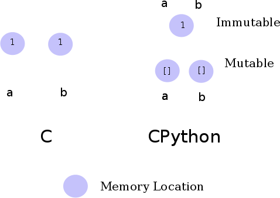

In my last two articles (Data in CPython and Data in C), as it turned out, I discussed two fundamental points in each language:
In this article, I will summarize the findings by presenting a comparative analysis.
The simplest way to explain the difference between an assignment operation in C and that in CPython is as follows.
Assignment is a copying operation in C. The data on the right side of the expression is copied into the memory location pointed to by the left hand side of the assignment statement. This is irrespective of whether this data exists anywhere else in the current scope. This is simply because of the fact that data in C has no usable existence unless stored in a variable, and no two variables in C will occupy the same location in memory. Thus, you will have multiple copies of the same data in each of these variables, if there are assignment statements to this effect.
On the other hand, an assignment statement is a binding operation in CPython. This again follows from the fact that in CPython, data is an object and occupies a location in memory. Thus, data has existence without a variable identifying it. However, like C, to refer to the data object, you need a binding to it. This binding is what you would usually call a variable. However, that is where the similarity with variables in C ends. As I discussed in the article on CPython, depending on whether the data is mutable or immutable, multiple bindings point to different or same memory location. For example, if you have two assignment statements, a=2 and b=2 (int data items are immutable), the id(a) == id(b) will evaluate to True. However, if the statements were a=[] and b=[] (list data items are mutable), id(a)==id(b) will evaluate to False. What happens when you create a new binding from an existing binding? You will have one more binding to the original object. As discussed in the article on CPython, depending on whether the original object is mutable or not, any change in it will either propagate to the copies or not.
The following graphic attempts to present the differences between the two languages visually.
In case of C, the parameters are either passed in a call by value fashion or in a call by reference fashion. As we saw in the article on C, the type of the data being passed determines this.
CPython, on the other hand always passes bindings to the original data objects. Depending on whether the data object is mutable or immutable, semantics of the propagation of changes to the original object are determined.
This article marks the conclusion of this admittedly limited in scope three part series looking at how the most fundamental data types in C and Python behave differently from each other. However, I think I can now finally say that after writing these three articles, I have finally got a clear picture of working with mutable and immutable data in Python and how they differ from C.
{kind=link}